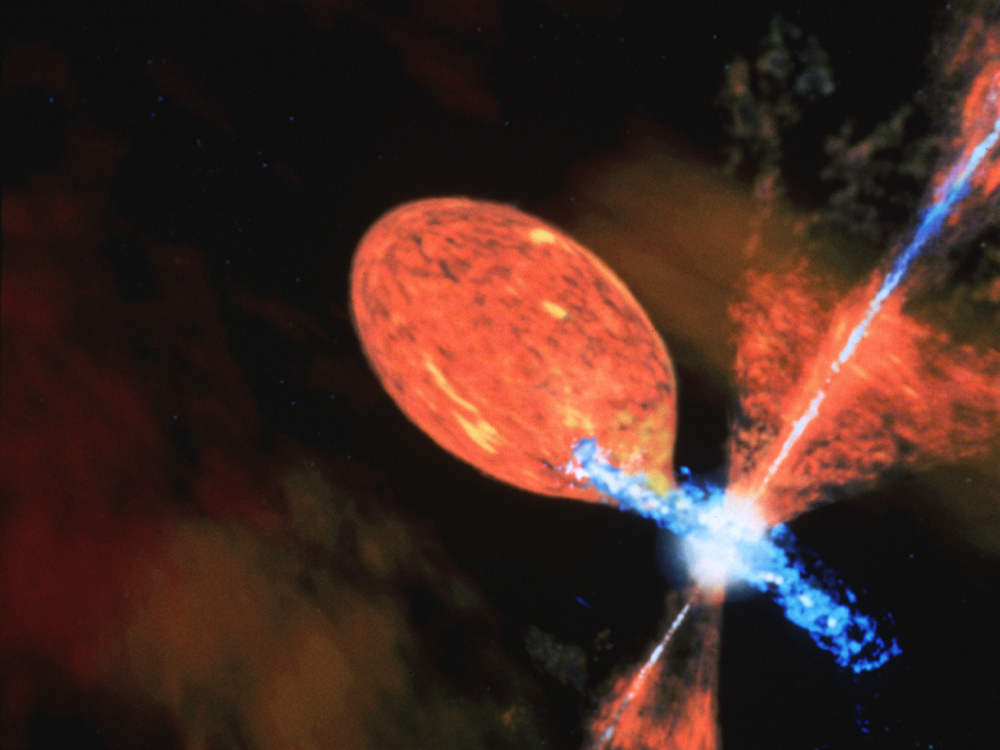

Symbiotic stars are interacting binary systems in which a cool red giant and a hot compact companion, almost always a white dwarf, orbit close enough that mass transfer between them produces a striking spectral paradox: absorption features of a cool star and high-ionisation emission lines normally seen only in very hot objects, all in a single spectrum.

NASA, ESA, and D. Berry (STScI)
The red giant loses mass through a slow stellar wind or, in closer systems, through Roche lobe overflow. The white dwarf, with surface temperatures that can reach tens of thousands of kelvin, photo-ionises the surrounding gas, producing strong emission lines of hydrogen, helium, and higher-ionisation species. The key spectral signatures include He II emission (found in about 80% of confirmed systems) and Raman-scattered O VI lines (about 40%).
About 300 symbiotic stars are confirmed in the Milky Way, with typical orbital periods of several hundred to thousands of days. They fall into sub-types based on their infrared properties. S-type (stellar) systems, making up roughly 80% of the Galactic population, have a normal giant visible in the near-infrared and shorter orbital periods peaking around 500 to 600 days. D-type (dusty) systems, about 15%, contain a Mira variable hidden inside a thick dust shell. A rare D'-type accounts for the remaining few per cent.
Outbursts and jets
About one-quarter of known symbiotic stars have been seen in outburst, brightening by several magnitudes in a matter of weeks. These events are driven by instabilities in the accretion disk or bursts of enhanced mass transfer. In some cases, the white dwarf accumulates enough hydrogen to trigger a thermonuclear runaway on its surface, producing a nova eruption. Recurrent novae such as RS Ophiuchi and T Coronae Borealis belong to this class, with their white dwarfs already near the Chandrasekhar limit of about 1.4 solar masses.
Some symbiotic systems also launch collimated bipolar jets. The best-studied example is R Aquarii, the nearest known symbiotic star at roughly 711 light-years. Its Mira-type red giant (pulsation period about 390 days, radius over 400 solar radii) orbits a white dwarf every 44 years. Hubble observations from 2014 to 2023 show the jet filaments, travelling at over 450 km/s, evolving in real time.
Link to Type Ia supernovae
Symbiotic stars have long been considered as possible progenitors of Type Ia supernovae through the single-degenerate channel: a white dwarf steadily accreting from its giant companion until it nears the Chandrasekhar mass and explodes. At least one observed supernova (PTF 11kx, 2012) appears to have come from a symbiotic nova progenitor. However, a 2025 study found no evidence of red giant companions in 189 normal Type Ia remnants, leaving the question open.
History
Annie Cannon at Harvard first noted the spectral peculiarity of these objects around the turn of the 20th century. Paul Merrill coined the term "symbiotic stars" in 1941 at an American Astronomical Society meeting, after decades of work establishing that high-ionisation emission lines in cool-giant spectra require a hidden hot source. Z Andromedae, discovered by Williamina Fleming in 1901, remains the prototype of the class and the only officially recognised symbiotic sub-type in the General Catalogue of Variable Stars.